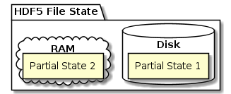

Call the Doctor - HDF(5) Clinic
Table of Contents
- Clinic 2021-03-02
- Clinic 2021-02-23
- Clinic 2021-02-16
- Clinic 2021-02-09
- Goal(s)
- This is a meeting dedicated to your questions.
- In the unlikely event there aren't any
- Sometimes life deals you an HDF5 file
- Meeting Etiquette
- Be social, turn on your camera (if you've got one)
- Raise your hand to signal a contribution (question, comment)
- Be mindful of your "airtime"
- Introduce yourself
- Use the shared Google doc for questions and code snippets
- When the 30 min. timer runs out, this meeting is over.
- Notes
- Don't miss our next webinar about data virtualization with HDF5-UDF and how it can streamline your work
- Bug-of-the-Week Award (my candidate)
- Documentation update
Clinic 2021-03-02
Your questions
- h5rnd
- Question: How are generated HDF5 objects named? An integer name, or can a
randomized string be used?
h5rndGenerates a pool of random strings as link names- Uniform length distribution between 5 and 30 over
[a-z][A-Z]
- Question: Does it create multi-dimensional datasets with a rich set of
HDF5 datatypes? Compound datatypes, perhaps?
- Currently, it creates 1,000 element 1D FP64 datasets (w/ attribute)
- RE: types - anything is possible. Budget?
- Question: Are named datatypes generated? If not, are these reasonable
types of extensions for
h5rnd?- Not currently, but anything is possible
- Question: How are generated HDF5 objects named? An integer name, or can a
randomized string be used?
- Other questions?
- Question: How do these extensions fit with the general intent and
extensibility of
h5rnd?- It was written as an illustration
- Uses an older version of H5CPP
- Labeling could be improved
- Dataset generation under development
- Some enhancements in a future version
- Question: How do these extensions fit with the general intent and
extensibility of
Last week's highlights
- Forum
- External link access in parallel HDF5 1.12.0
- Can't access externally linked datasets in parallel; fine in 1.10.x and in serial
- It appears that someone encountered a known bug in the field
- Dev. claim it's fixed in
develop, waiting for confirmation from the user
H5I_dec_refhangs
H5Idec_refis one of those functions that needs to be used w/ extra care- Using
mpi4pyandh5py - User provided an MWE (in Python) and, honestly, there is limited help we can
offer (as we are neither
mpi4pynorh5pyexperts) - A C or C++ MWE might be the better starting point
h5diffexits with 1 but doesn’t print differences
- Case of out-of-date/poor documentation
h5diffis perhaps the most complex tool (multi-graph comparison + what does'='mean?)- Writing code is the easy part
- We need to do better
- Independent datasets for MPI processes. Progress?
- Need some clarification on the problem formulation
- Current status (w/ MPI) MD-modifying ops. must be collective
- On the horizon: asynchronous operations (ASYNC VOL)
- Writing to virtual datasets
- Apparently broken when a datatype conversion (truncation!) is involved
- External link access in parallel HDF5 1.12.0
Clinic 2021-02-23
Your questions
- How to use
H5Ocopyin C++ code?
-
sandhya.v250 (Feb 19)
Hello Team, I want to copy few groups from one hdf5 file to hdf5 another file which is not yet created and this should be done inside the C++ code..can you please tell me how can I use this inside this tool
The function in question (there is also a tool called
h5copy):herr_t H5Ocopy ( hid_t src_loc_id, const char* src_name, hid_t dst_loc_id, const char* dst_name, hid_t ocpypl_id, hid_t lcpl_id );
- The emphasis appears to be on C++
- You can do this in C. It's just more boilerplate.
- Whenever I need something C++, I turn to my colleague Steven Varga (= Mr. H5CPP)
- He also created a nice random HDF5 file generator/tester (= 'Prüfer' in German)
-
- Steven's solution (excerpt)
The full example can be downloaded from here.
Basic idea: Visit all objects in the source via
H5Ovisitand invokeH5Ocopyin the callback.1: 2: #include "argparse.h" 3: #include <h5cpp/all> 4: #include <string> 5: 6: herr_t ocpy_callback(hid_t src, const char *name, const H5O_info_t *info, 7: void *dst_) { 8: hid_t* dst = static_cast<hid_t*>(dst_); 9: int err = 0; 10: switch( info->type ){ 11: case H5O_TYPE_GROUP: 12: if(H5Lexists( *dst, name, H5P_DEFAULT) >= 0) 13: err = H5Ocopy(src, name, *dst, name, H5P_DEFAULT, H5P_DEFAULT); 14: break; 15: case H5O_TYPE_DATASET: 16: err = H5Ocopy(src, name, *dst, name, H5P_DEFAULT, H5P_DEFAULT); 17: break; 18: default: /*H5O_TYPE_NAMED_DATATYPE, H5O_TYPE_NTYPES, H5O_TYPE_UNKNOWN */ 19: ; // nop to keep compiler happy 20: } 21: return 0; 22: } 23: 24: int main(int argc, char **argv) 25: { 26: argparse::ArgumentParser arg("ocpy", "0.0.1"); 27: arg.add_argument("-i", "--input") 28: .required().help("path to input hdf5 file"); 29: arg.add_argument("-s", "--source") 30: .default_value(std::string("/")) 31: .help("path to group within hdf5 container"); 32: arg.add_argument("-o", "--output").required() 33: .help("the new hdf5 will be created/or opened rw"); 34: arg.add_argument("-d", "--destination") 35: .default_value(std::string("/")) 36: .help("target group"); 37: 38: std::string input, output, source, destination; 39: try { 40: arg.parse_args(argc, argv); 41: input = arg.get<std::string>("--input"); 42: output = arg.get<std::string>("--output"); 43: source = arg.get<std::string>("--source"); 44: destination = arg.get<std::string>("--destination"); 45: 46: h5::fd_t fd_i = h5::open(input, H5F_ACC_RDONLY); 47: h5::fd_t fd_o = h5::create(output, H5F_ACC_TRUNC); 48: h5::gr_t dgr{H5I_UNINIT}, sgr = h5::gr_t{H5Gopen(fd_i, source.data(), 49: H5P_DEFAULT)}; 50: h5::mute(); 51: if( destination != "/" ){ 52: char * gname = destination.data(); 53: dgr = H5Lexists(fd_o, gname, H5P_DEFAULT) >= 0 ? 54: h5::gr_t{H5Gcreate(fd_o, gname, H5P_DEFAULT, H5P_DEFAULT, 55: H5P_DEFAULT)} 56: : h5::gr_t{H5Gopen(fd_i, gname, H5P_DEFAULT)}; 57: H5Ovisit(sgr, H5_INDEX_CRT_ORDER, H5_ITER_NATIVE, ocpy_callback, &dgr ); 58: } else 59: H5Ovisit(sgr, H5_INDEX_CRT_ORDER, H5_ITER_NATIVE, ocpy_callback, &fd_o); 60: h5::unmute(); 61: } catch ( const h5::error::any& e ) { 62: std::cerr << e.what() << std::endl; 63: std::cout << arg; 64: } 65: return 0; 66: } 67:
- Parting thoughts
- This is can be tricky business depending on how selective you want to be
H5Ovisitvisits objects and does not account for dangling links, etc.H5Ocopy's behavior is highly customizable. Check the options & play w/h5copyto see the effect!
- More Questions
- Question 1
I have an unrelated question. I have 7,000 HDF5 files, each 500 MB long. When I use them, should I open them selectively, when I need them, or is it advantageous to make one big file, or to open virtual files? I am interested in the speed of the different approaches.
- 40 GbE connectivity
- 10 contiguously laid out Datasets per file => ~50 MB per dataset
- Always reading full datasets
- Considerations:
- If you have the RAM and use all data in an "epoch" just read whole files and use HDF5 file images for "in-memory I/O."
- You could maintain an index file I which contains external links (one for each of the 7,000 files), and a dataset which for each external file and dataset contains the offset of the dataset in the file. You would keep I (small!) in memory and, for each dataset request, read the ~50MB directly w/o the HDF5 library. This assumes that no datatype conversion is necessary and you have no trouble interpreting the bytes.
- A variation of the previous approach would be for the stub-file to contain HDF5 virtual datasets, datasets stitched together from other datasets. This would we a good option, if you wanted to simplify your application code and make everything appear as a single large HDF5 file. It'd be important though to have that (small) stub-file on the clients in memory to not incur a high latency penalty.
- Both approaches can be easily parallelized, assuming read-only access. If there are writers involved, it's still doable, but additional considerations apply.
Another question: what is the recommended way to combine Python with C++ with C++ reading in and working on large hdf5 files that require a lot of speed.
- To be honest, we ran out of time and I (GH) didn't fully grasp the question.
- Steven said something about Julia
- Henric uses Boost Python. What about Cython?
What's the access pattern?
Let's continue the discussion on the forum or come back next week!
- Question 1
Last week's highlights
- Forum
- Hyperslab selection bug confirmed
- Write data to variable length string attribute bug is a feature
;-) - Possible bug in HDFView
- The MWE checks out and it looks more and more like a bug in HDFView
Appendix
- The
h5copycommand line tool
gerd@guix ~$ h5copy usage: h5copy [OPTIONS] [OBJECTS...] OBJECTS -i, --input input file name -o, --output output file name -s, --source source object name -d, --destination destination object name OPTIONS -h, --help Print a usage message and exit -p, --parents No error if existing, make parent groups as needed -v, --verbose Print information about OBJECTS and OPTIONS -V, --version Print version number and exit --enable-error-stack Prints messages from the HDF5 error stack as they occur. -f, --flag Flag type Flag type is one of the following strings: shallow Copy only immediate members for groups soft Expand soft links into new objects ext Expand external links into new objects ref Copy references and any referenced objects, i.e., objects that the references point to. Referenced objects are copied in addition to the objects specified on the command line and reference datasets are populated with correct reference values. Copies of referenced datasets outside the copy range specified on the command line will normally have a different name from the original. (Default:Without this option, reference value(s) in any reference datasets are set to NULL and referenced objects are not copied unless they are otherwise within the copy range specified on the command line.) noattr Copy object without copying attributes allflags Switches all flags from the default to the non-default setting These flag types correspond to the following API symbols H5O_COPY_SHALLOW_HIERARCHY_FLAG H5O_COPY_EXPAND_SOFT_LINK_FLAG H5O_COPY_EXPAND_EXT_LINK_FLAG H5O_COPY_EXPAND_REFERENCE_FLAG H5O_COPY_WITHOUT_ATTR_FLAG H5O_COPY_ALL
Clinic 2021-02-16
Your questions
Last week's highlights
- Events
- Forum
- Release of HDFql 2.3.0
- Excel import and export (no Excel or OLE dependency!)
- Possible bug in HDFView
- Based on the description, it appears that external links are not properly traversed
- Waiting for MWE
- Possible hyperslab selection bug in 1.10.7
- It appears that
H5S_SELECT_ORis no longer "commutative", i.e.,H5DreadwithSelA OR SelBworks, but notSelB OR SelA - Wasn't there in 1.10.6
- It appears that
- Release of HDFql 2.3.0
Notes
- What (if any) are the ACID properties of HDF5 operations?
- Split-state
The state of an open (for RW) HDF5 file is split between RAM and persistent storage. Often the partial states will be out of sync. In the event of a "catastrophic" failure (power outage, application crash, system crash), it is impossible to predict what the partial state on disk will be.

- Non-transactional
The main reason why it is impossible to predict the outcome is that HDF5 operations are non-transactional. By 'transaction' I mean a collection of operations (and the effects of their execution) on the physical and abstract application state. In particular, there are no concepts of beginning a transaction, a commit, or a roll-back. Since they are not transactional, it is not straightforward to speak about the ACID properties of HDF5 operations.
- File system facilities
People sometimes speak about ACID properties with respect to file system operations. Although the HDF5 library relies on file system operations for the implementation of HDF5 operations, the correspondence is not as direct as might wish. For example, what appears as a single HDF5 operation to the user often includes multiple file system operations. Several file system operations have a certain property only at the level of a single operation, but not multiple operations combined.
- ACID
- Atomicity
- All changes to an HDF5 file's state must complete or fail as a
whole unit.
- Supported in HDF5? No.
- Some file systems only support single op. atomicity, if at all.
- A lot of HDF5 operations are in-place; mixed success -> impossible to recover
- Consistency
- An operation is a correct transformation of the HDF5 file's
state.
- Supported in HDF5? Yes and No
- Depends on one's definition of HDF5 file/object integrity constraints
- Assuming we are dealing with a correct program
- Special case w/ multiple processes: Single Writer Multiple Reader
- Isolation (serialization)
- Even though operations execute concurrently, it
appears to each operation, OP, that others executed either before OP or after OP, but not both.
- Supported in HDF5? No.
- Depends on concurrency scenario and requires special configuration (e.g., MT, MPI).
- Time-of-check-time-of-use vulnerability
- Durability
- Once an operation completes successfully, it's changes to the
file's state survive failure.
- Supported in HDF5? No.
- "Split brain"
- No transaction log
- Split-state
Clinic 2021-02-09
THIS MEETING IS BEING RECORDED and the recording will be available on The HDF Group's YouTube channel. Remember to subscribe!
Goal(s)
This is a meeting dedicated to your questions.
In the unlikely event there aren't any
We have a few prepared topics (forum posts, announcements, etc.)
Sometimes life deals you an HDF5 file
No question is too small. We are here to learn. All of us.
Meeting Etiquette
Be social, turn on your camera (if you've got one)
Talking to black boxes isn't fun.
Raise your hand to signal a contribution (question, comment)
Mute yourself while others are speaking, be ready to participate.
Be mindful of your "airtime"
We want to cover as many of your topics as possible. Be fair to others.
Introduce yourself
- Your Name
- Your affiliation/organization/group
- One reason why you are here today
Use the shared Google doc for questions and code snippets
The link can be found in the chat window.
When the 30 min. timer runs out, this meeting is over.
Continue the discussion on the HDF Forum or come back next week!
Notes
Don't miss our next webinar about data virtualization with HDF5-UDF and how it can streamline your work
- Presented by Lucas Villa Real (IBM Research)
- Feb 12, 2021 11:00 AM in Central Time (US and Canada)
- Sign-up link
Bug-of-the-Week Award (my candidate)
- Write data to variable length string attribute by Kerim Khemraev
- Jira issue HDFFV-11215
Quick demonstration
#include "hdf5.h" #include <filesystem> #include <iostream> #include <string> #define H5FILE_NAME "Attributes.h5" #define ATTR_NAME "VarLenAttr" namespace fs = std::filesystem; int main(int argc, char *argv[]) { hid_t file, attr; auto attr_type = H5Tcopy(H5T_C_S1); H5Tset_size(attr_type, H5T_VARIABLE); H5Tset_cset(attr_type, H5T_CSET_UTF8); auto make_scalar_attr = [](auto& file, auto& attr_type) -> hid_t { auto attr_space = H5Screate(H5S_SCALAR); auto result = H5Acreate(file, ATTR_NAME, attr_type, attr_space, H5P_DEFAULT, H5P_DEFAULT); H5Sclose(attr_space); return result; }; if( !fs::exists(H5FILE_NAME) ) { // If the file doesn't exist we create it & // add a root group attribute std::cout << "Creating file...\n"; file = H5Fcreate(H5FILE_NAME, H5F_ACC_TRUNC, H5P_DEFAULT, H5P_DEFAULT); attr = make_scalar_attr(file, attr_type); } else { // File exists: we either delete the attribute and // re-create it, or we just re-write it. std::cout << "Opening file...\n"; file = H5Fopen(H5FILE_NAME, H5F_ACC_RDWR, H5P_DEFAULT); #ifndef REWRITE_ONLY H5Adelete(file, ATTR_NAME); attr = make_scalar_attr(file, attr_type); #else attr = H5Aopen(file, ATTR_NAME, H5P_DEFAULT); #endif } // Write or re-write the attribute const char* data[1] = { "Let it be λ!" }; H5Awrite(attr, attr_type, data); hsize_t size; H5Fget_filesize(file, &size); std::cout << "File size: " << size << " bytes\n"; H5Tclose(attr_type); H5Aclose(attr); H5Fclose(file); }
Documentation update
- Doxygen-based RM
- Remaining: a few
H5Pcalls andH5E - Current version: https://hdf5.io/develop/modules.html